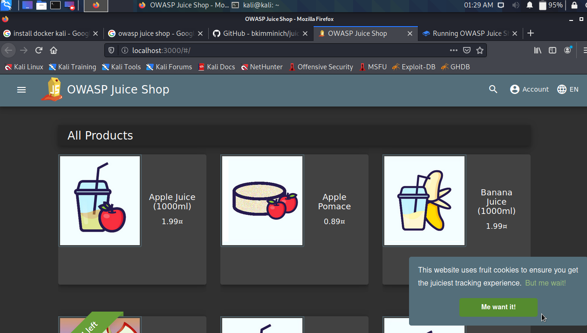

installed docker via
https://airman604.medium.com/installing-docker-in-kali-linux-2017-1-fbaa4d1447fe
juice shop :its vulnerable websitew made by owasp
and we wioll attack it to learn owasp top 10
we can even deploy it on heroku
fololow steps of docker on
https://github.com/bkimminich/juice-shop

thus we have it now
https://bkimminich.gitbooks.io/pwning-owasp-juice-shop/content/part2/
on this site cover most of the challeenges by your own